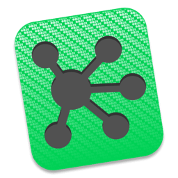
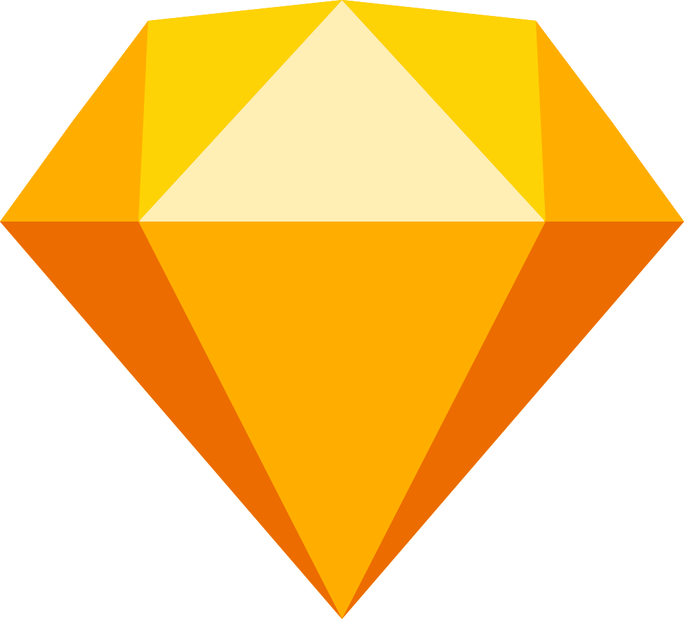
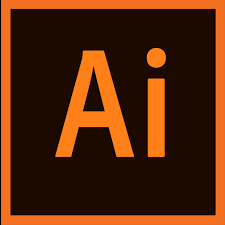

My name is Arezoo Naseri, UX/UI designer based in Stavanger, Norway.
I’m a fan of clean, simple design. As a detail, oriented person with a passion for excellence; I am good at listening to user’s needs, then analysing and implementing the best designed solution. My approach to work and life is directly inspired by Antoine de Saint-Exupéry from the little prince: "It's the time you spent on your rose that makes your rose so important."
I have worked as a graphic designer and Art Director wherein I proved my ability to design best-fit solutions for multifaceted products including print material and digital platforms. I have assisted clients from different backgrounds and industries to design and implement thoughtful and impactful branding tools to help grow their business.
Observing how digital technology reshapes industries and improves human lives, encouraged me to broaden my design skills. I realised the world of user experience design is full of opportunities to expand my creative career. My keenness and usability to aesthetics, creative thinking and communication skills as graphic designer were my existing advantages to deal with user emotions and taste as UX designer which made this career transition smoother. I have also learned the basics of CSS, HTML, and JavaScript which allows me to better understand the constraints of the designs I am creating and makes it much easier to create designs accordingly, also improves my communication with developers.
Curious? Feel free to ping me via Email or LinkedIn or check out my resume.
My skills and tools that I use.
Discovering
Analysing the competitors, conducting user research, observing and listening to the users helps me to understand the problems and create proper business requirement.

Concepting
Analysing collected data from user surveys and user researches enables me to create solid personas. I use Affinity Mapping and Omnigraffle to create an optimised User Flows and then refine sitemap with card sorting services like optimal workshop.
- 
Prototyping
Iterative design process and rapid prototyping helps me to quickly execute ideas and come to a testable product. I start either with pen and paper or use InVison Freehand. Then I use wireframing tools like Balsamic or Omnigraffle to create low-fidelity prototype. In order to provide high-fidelity prototype I use Sketch which I can add more visual aspect to the project. Using InVision I can bring the design to life for testing I use InVision.
- 

Visualising
My visual communication skills enables me to create user interfaces when needed. I am very proficient with Adobe Photoshop and Adobe illustrator. However I mostly use Sketch as main tool to create user interfaces.

- 
Testing and anlysing
In an Iterative design process testing will continue to guide ongoing optimizations. Conducting remote or un-remote usability test and A/B preference, using third party online service like UsabilityTesting, Userzoom, and UsabilityHub and Google Analytics to evaluate the product and refine the features.
- 
Codeing
I have basics knowledge of CSS, HTML, and JavaScript which allows me to better understand the constraints of the designs I am creating..